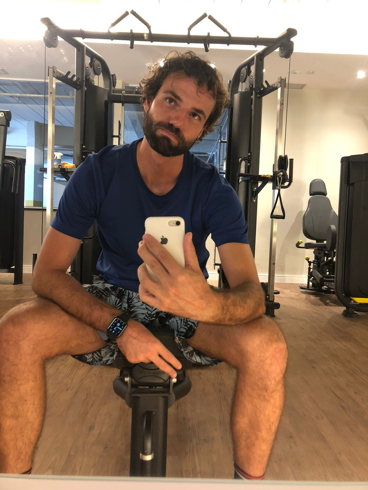

Quando estamos planejando nossos boletos mensais, temos o aluguel para pagar, a conta de
água, o plano de celular, as brusinhas e, dentre a gama de opções de contas geradas, o corpo se faz presente.
Sim, o corpo (caso tenha alguma dúvida de sua importância, ler:
o corpo é seu bem mais precioso), seja em academia, box de cross training, pilates,
natação ou qualquer outro exercício físico focado à melhoria, independente do objetivo.
Pensando no bem estar, na saúde, na hipertrofia, no emagrecimento, ou em qualquer outra meta
que tenha quando você busca alguma opção de exercício físico, devemos nos questionar: o que está fazendo é o suficiente?
Será que se você for acompanhado por um profissional de perto, seus objetivos seriam otimizados?
Será que se você for acompanhado por um profissional de perto, seus objetivos seriam otimizados?
Segundo a ciência, sim. Treinar com um personal capacitado do lado aumentam as chances de alcançar seu propósito.
Como é o caso de Mazetti et al. (2000), que analisaram a influência de treinos supervisionados em treinamentos de força. Segundo
os autores, o treino com o auxílio do personal capacitado aumentou a força dos participantes. Dados que corroboram com
Coutts, Murphy e Dascombe (2004), que analisaram o treino supervisionado em treinos de força e potência em jovens atletas.
Dito isso, sabendo que a ajuda de um treinador individual pode otimizar seus ganhos, por que
não contratá-lo?
A resposta para isso é simples: porque é caro né Kaio. Obviamente.
Sim, de fato é caro, quando pensamos de forma binária. Te convido a ampliar tal pensamento. Pensemos no seguinte exemplo "hipotético": Uma aluna que faz um treino de manutenção de saúde 3x na semana e recebe todos os respaudos possíveis que a academia pode fornecer. Porém, na pandemia começou a sentir dor nas costas por conta do home office, o treino foi ajustado para tal demanda. De fato o treino passado foi muito bom pois a academia é de excelência, contudo, tal dor não se deve trabalhar apenas nas costas, mas sim verificar uma série de fatores, como por exemplo, encurtamento dos músculos da cadeia posterior, tensão excessiva nas escapulas, entre outros.
A resposta para isso é simples: porque é caro né Kaio. Obviamente.
Sim, de fato é caro, quando pensamos de forma binária. Te convido a ampliar tal pensamento. Pensemos no seguinte exemplo "hipotético": Uma aluna que faz um treino de manutenção de saúde 3x na semana e recebe todos os respaudos possíveis que a academia pode fornecer. Porém, na pandemia começou a sentir dor nas costas por conta do home office, o treino foi ajustado para tal demanda. De fato o treino passado foi muito bom pois a academia é de excelência, contudo, tal dor não se deve trabalhar apenas nas costas, mas sim verificar uma série de fatores, como por exemplo, encurtamento dos músculos da cadeia posterior, tensão excessiva nas escapulas, entre outros.
Tal exemplo, em uma academia séria corre o risco de o professor não conseguir suprir tas demandas, não por falta de
competência, mas por estar prestando atenção em outros alunos. Coisa que um treinador individual se atentaria.
Mesmo que nossa aluna mantenha o treino na academia e treine uma vez com seu "personal" na academia do próprio prédio em que mora, os resultados são catalizados. Digamos que esse personal seja eu, além de trabalhar as demandas recorrentes às dores, a aluna receberá lições de casa diárias e a possíbilidade de trabalhos conjuntos com o professor da academia (afinal, um trabalho não soprepõe o outro).
Um outro exemplo recorrente para entendermos melhor: um aluno que não se sente bem em nenhum espaço "fitness" por estar acima do peso "aceito pela sociedade", sempre desiste dos exercícios que começa. Com um treinador individual, além de identificar e trabalhar a fundo o objetivo do aluno, aplicará exercícios para desenvolver a motivação, para que ele seja autônomo, além de realizar questionamentos de propriocepção corporal quando tiver que fazer exercícios sozinho (quer saber mais sobre motivação, acesse: Motivação: principios básicos).
Mesmo que nossa aluna mantenha o treino na academia e treine uma vez com seu "personal" na academia do próprio prédio em que mora, os resultados são catalizados. Digamos que esse personal seja eu, além de trabalhar as demandas recorrentes às dores, a aluna receberá lições de casa diárias e a possíbilidade de trabalhos conjuntos com o professor da academia (afinal, um trabalho não soprepõe o outro).
Um outro exemplo recorrente para entendermos melhor: um aluno que não se sente bem em nenhum espaço "fitness" por estar acima do peso "aceito pela sociedade", sempre desiste dos exercícios que começa. Com um treinador individual, além de identificar e trabalhar a fundo o objetivo do aluno, aplicará exercícios para desenvolver a motivação, para que ele seja autônomo, além de realizar questionamentos de propriocepção corporal quando tiver que fazer exercícios sozinho (quer saber mais sobre motivação, acesse: Motivação: principios básicos).
Ufa! Poderíamos ficar falando muito, tentando mostrar o porque treinar com um treinador individual
é um melhor custo benefício mas, caso não tenha se convencido ainda, te convido a realizar um treino comigo. Marque seu
treino experimental e veja por si mesmo(a)!
E entre em depoimentos para ter uma ideia mais ampla.
Estou aguardando sua mensagem.
E entre em depoimentos para ter uma ideia mais ampla.
Estou aguardando sua mensagem.
Mazzetti SA, Kraemer WJ, Volek JS, Duncan ND, Ratamess NA, Gómez AL, Newton RU, Häkkinen K, Fleck SJ. The influence of direct supervision of resistance training on strength performance. Med Sci Sports Exerc. 2000 Jun;32(6):1175-84. doi: 10.1097/00005768-200006000-00023. PMID: 10862549.
Coutts AJ, Murphy AJ, Dascombe BJ. Effect of direct supervision of a strength coach on measures of muscular strength and power in young rugby league players. J Strength Cond Res. 2004 May;18(2):316-23. doi: 10.1519/R-12972.1. PMID: 15142000.
Coutts AJ, Murphy AJ, Dascombe BJ. Effect of direct supervision of a strength coach on measures of muscular strength and power in young rugby league players. J Strength Cond Res. 2004 May;18(2):316-23. doi: 10.1519/R-12972.1. PMID: 15142000.